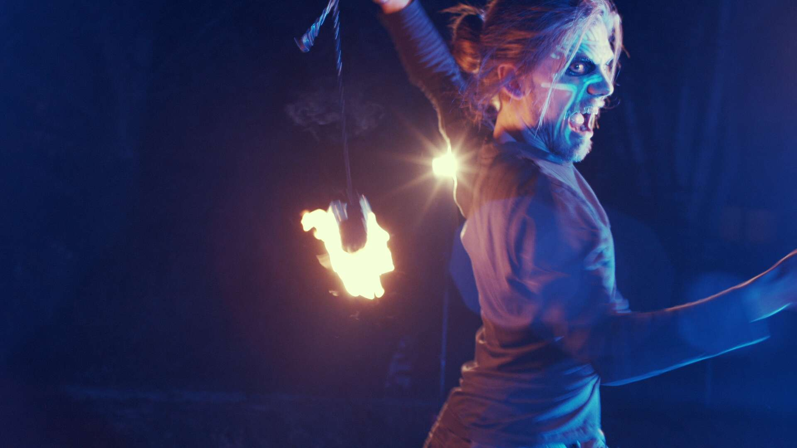

Was ist das Theater zur blauen Stunde?
Hinter dem Aufbau eines Laienfeuertheaterkollektivs steckt die Idee, eine Plattform zu schaffen, durch die künstlerisch interessierte Menschen aus verschiedensten Bereichen, unabhängig vom Grad ihrer Professionalität, zusammenkommen können, gemeinsam und auf Augenhöhe an einem Werk arbeiten können und untereinander von individuellen Fähigkeiten profitieren können, indem diese sich in der Arbeit ergänzen sowie bei Bedarf und Wunsch untereinander in kostenfreien Workshops weitergegeben werden.
Die Tätigkeit im Verein soll erfahrbar machen, dass bedeutsame Werke der Kunst und Kultur auch ohne kommerzielle Beweggründe von Menschen für Menschen geschaffen werden können.